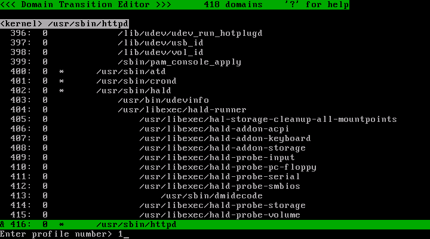
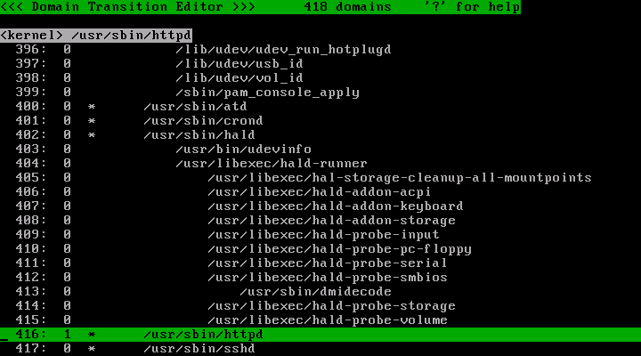
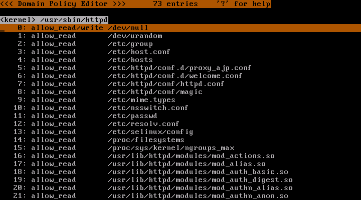

Last modified: $Date: 2009-07-07 16:44:28 +0900 (Tue, 07 Jul 2009) $
This page describes how to use TOMOYO's learning mode.
After you rebooted the system with TOMOYO Linux kernels, login as root.
Decide what application to analyze/protect.
Below procedure is a case of Apache in CentOS 5.3 environment.
Start the target application.
| service httpd start |
Let's start TOMOYO's policy editor. Please note that this time, you don't need to pass /etc/ccs/ to the command line, for we directly edits TOMOYO's policy currently used by the kernel.
In the CentOS 5.3 , Apache's program's location is /usr/sbin/httpd .
Scroll the cursor using arrow-keys and/or Home/End/PageUp/PageDown keys to find the line /usr/sbin/httpd . In this picture, it is line 416.
Press 's' key and entry '1' and press 'Enter' key.

Now the profile number of the /usr/sbin/httpd has changed to 1.

Press 'q' key to quit the policy editor. Then, restart the Apache in order to learn necessary permissions for starting/finishing the Apache.
| service httpd restart |
Run TOMOYO's policy editor again and goto the /usr/sbin/httpd line. (Line number may be changed because new domains are added by programs executed by you and the system.)

The following is the basic procedure for creating domain policy.
You don't need to create the whole policy for all allications at one time.
Assign a profile that doesn't perform MAC (in this manual, profile 0) and invoke applications. The purpose of this procedure is to create domains for applications.
For example, if you want to protect /usr/sbin/httpd , firstly create domains for /usr/sbin/httpd . If /usr/sbin/httpd is registered with "initialize_domain", a domain named "<kernel> /usr/sbin/httpd" is created by invoking /usr/sbin/httpd . If not registered, a child domain of invoker domain (for example, if you invoked from "<kernel> /usr/sbin/mingetty /bin/login /bin/bash", it is "<kernel> /usr/sbin/mingetty /bin/login /bin/bash /usr/sbin/httpd") is created. This manual assumes that /usr/sbin/httpd is registered with "initialize_domain".
Assign a profile that doesn't perform MAC (in this manual, profile 0) to the domain current process (normally a shell) belongs to using "ccs-setprofile" command.
| xargs -0 /usr/sbin/ccs-setprofile 0 < /proc/ccs/self_domain |
This is needed to avoid assigning a profile that performs MAC in "enforcing mode" to the newly created domain, for newly created domain inherits the creator's profile.
Start /usr/sbin/httpd .
| service httpd start |
You can use the following command to confirm that the domain is created. Make sure the domain for application you want to protect is created.
| less /proc/ccs/.domain_status |
After you confirmed that the domain is created, proceed to the next step.
After you confirmed that the domain is created, assign a profile that perform MAC in "learning mode" (in this manual, profile 1) to the domain using "ccs-setprofile" command.
| /usr/sbin/ccs-setprofile -r 1 '<kernel> /usr/sbin/httpd' |
Start /usr/sbin/httpd and let the system append ACLs needed for /usr/sbin/httpd .
| service httpd restart |
If the profile is configured as "1-TOMOYO-VERBOSE=enabled" (this is default), the "TOMOYO-WARNING:" messages will be printed to the console when policy violation occurs. But regarding "learning mode", the "TOMOYO-WARNING:" messages are printed only once because necessary ACLs are automatically appended when you do the same operation again.
If the "TOMOYO-WARNING:" messages are no longer printed when you do the operation you want to allow, proceed to the next step.
After you judged that necessary ACLs are appended, assign a profile that perform MAC in "permissive mode" (in this manual, profile 2) to the domain using "ccs-setprofile" command.
| /usr/sbin/ccs-setprofile -r 2 '<kernel> /usr/sbin/httpd' |
Start /usr/sbin/httpd and confirm that all necessary ACLs are appended.
If the profile is configured as "2-TOMOYO-VERBOSE=enabled" (this is default), the "TOMOYO-WARNING:" messages will be printed to the console when policy violation occurs. Regarding "permissive mode", the "TOMOYO-WARNING:" messages are printed again because necessary ACLs are not automatically appended when you do the same operation again.
If the "TOMOYO-WARNING:" messages are no longer printed when you do the operation you want to allow, proceed to the next step.
After you judged that necessary ACLs are given, assign a profile that perform MAC in "enforcing mode" (in this manual, profile 3) to the domain using "ccs-setprofile" command.
| /usr/sbin/ccs-setprofile -r 3 '<kernel> /usr/sbin/httpd' |
And now, /usr/sbin/httpd is protected by MAC.
If the profile is configured with "3-TOMOYO-VERBOSE=enabled" (this is default), the "TOMOYO-ERROR:" messages will be printed to the console and the requests are rejected when policy violation occurs. Also, the history of policy violation is accumulated to /proc/ccs/reject_log .
TOMOYO Linux allows administrators generate domain policy from policy violation logs. If you want to do so, assign a profile that perform MAC in "permissive mode" (in this manual, profile 2) to the domain.
| /usr/sbin/ccs-setprofile -r 2 '<kernel> /usr/sbin/httpd' |
The log file /var/log/tomoyo/reject_log.conf created by "ccs-auditd" contains list of ACLs that violated domain policy in time series. Select appropriate range and pass to the filter as show below. This filter program sorts by domains and removes duplicated entries. (In other words, "sort" by domains and "uniq".)
| /usr/sbin/ccs-sortpolicy < /var/log/tomoyo/reject_log.conf |
Check the output and judge whether these ACLs should be added or not. And if you judged to add, add to /etc/ccs/domain_policy.conf and run "ccs-loadpolicy" to reload domain policy.
| /usr/sbin/ccs-loadpolicy d |
If you run "ccs-loadpolicy" with "f" option (i.e. "ccs-loadpolicy df"), the domain policy currently in the kernel are erased before the domain policy currently on the disk is loaded.
Rename the current reject log file. "ccs-auditd" will detect the disappearance of the current reject log file and recreates it.
|
[root@sakura tomoyo]# mv /var/log/tomoyo/reject_log.conf /var/log/tomoyo/reject_log.tmp |
Check the logs. Select ranges you want to use using some text editor if necessary.
|
[root@sakura tomoyo]# cat /var/log/tomoyo/reject_log.tmp #2006-11-10 10:17:29# pid=4498 uid=0 gid=0 euid=0 egid=0 suid=0 sgid=0 fsuid=0 fsgid=0 <kernel> /usr/sbin/sshd /bin/tcsh /bin/cat allow_read /etc/inittab #2006-11-10 10:17:41# pid=4501 uid=0 gid=0 euid=0 egid=0 suid=0 sgid=0 fsuid=0 fsgid=0 <kernel> /usr/sbin/sshd /bin/tcsh /bin/cat allow_read /etc/resolv.conf #2006-11-10 10:18:00# pid=4502 uid=0 gid=0 euid=0 egid=0 suid=0 sgid=0 fsuid=0 fsgid=0 <kernel> /usr/sbin/sshd /bin/tcsh allow_execute /usr/bin/whoami #2006-11-10 10:18:00# pid=4502 uid=0 gid=0 euid=0 egid=0 suid=0 sgid=0 fsuid=0 fsgid=0 <kernel> /usr/sbin/sshd /bin/tcsh /usr/bin/whoami allow_read /etc/nsswitch.conf #2006-11-10 10:18:00# pid=4502 uid=0 gid=0 euid=0 egid=0 suid=0 sgid=0 fsuid=0 fsgid=0 <kernel> /usr/sbin/sshd /bin/tcsh /usr/bin/whoami allow_read /etc/passwd |
Sort the log by domains.
|
[root@sakura tomoyo]# /usr/sbin/ccs-sortpolicy < /var/log/tomoyo/reject_log.tmp <kernel> /usr/sbin/sshd /bin/tcsh allow_execute /usr/bin/whoami #2006-11-10 10:18:00# pid=4502 uid=0 gid=0 euid=0 egid=0 suid=0 sgid=0 fsuid=0 fsgid=0 <kernel> /usr/sbin/sshd /bin/tcsh /bin/cat allow_read /etc/inittab allow_read /etc/resolv.conf #2006-11-10 10:17:41# pid=4501 uid=0 gid=0 euid=0 egid=0 suid=0 sgid=0 fsuid=0 fsgid=0 #2006-11-10 10:18:00# pid=4502 uid=0 gid=0 euid=0 egid=0 suid=0 sgid=0 fsuid=0 fsgid=0 <kernel> /usr/sbin/sshd /bin/tcsh /usr/bin/whoami allow_read /etc/nsswitch.conf allow_read /etc/passwd #2006-11-10 10:18:00# pid=4502 uid=0 gid=0 euid=0 egid=0 suid=0 sgid=0 fsuid=0 fsgid=0 |
Since the line of timestamp is disturbing, remove lines starting with # before sorting.
|
[root@sakura tomoyo]# grep -v '^#' /var/log/tomoyo/reject_log.tmp | /usr/sbin/ccs-sortpolicy > /var/log/tomoyo/diff.tmp |
Check the output. This is in the form of domain policy.
|
[root@sakura tomoyo]# cat /var/log/tomoyo/diff.tmp <kernel> /usr/sbin/sshd /bin/tcsh allow_execute /usr/bin/whoami <kernel> /usr/sbin/sshd /bin/tcsh /bin/cat allow_read /etc/inittab allow_read /etc/resolv.conf <kernel> /usr/sbin/sshd /bin/tcsh /usr/bin/whoami allow_read /etc/nsswitch.conf allow_read /etc/passwd |
TOMOYO Linux allows administrators modify policies when the system is running in "enforcing mode". If you want to do so, start "ccs-queryd" command. The "ccs-queryd" command detects the policy violations and shows ACLs needed for allowing the requests. You can judge and append these ACLs to domain policy manually.
| /usr/sbin/ccs-queryd |
If "ccs-queryd" is running, the access requests that violated policy are kept pending. Otherwise, the access requests that violated policy are rejected immediately.
To avoid sleeping forever because of pending access requests, never logout (for example, detaching from screen(1)) if "ccs-queryd" is running.
To terminate "ccs-queryd", use Ctrl-C.
To save the policy currently in the kernel onto the disk, use "ccs-savepolicy" command.
| /usr/sbin/ccs-savepolicy |
By executing "savepolicy", three files ("system_policy.conf", "exception_policy.conf", "domain_policy.conf") are created in the /etc/ccs/ directory. To be accurate, they are symbolic links to text files whose filenames contain the creation time.
To load the policy currently on the disk into the kernel, use "ccs-loadpolicy" command.
| /usr/sbin/ccs-loadpolicy af |
The "a" option means load three files ("system_policy.conf", "exception_policy.conf", "domain_policy.conf"). The "f" option means erase the policy currently in the kernel before loading the policy currently on the disk. If "f" is not given, the policy currently on the disk will be added to the policy currently in the kernel.
To edit the policy currently in the kernel, use "ccs-editpolicy" command. See Using Policy Editor for usage.
| /usr/sbin/ccs-editpolicy |
To edit the policy currently on the disk, pass the policy directory /etc/ccs/ to "ccs-editpolicy" command. You can edit policy files in /etc/ccs/ directory using "ccs-editpolicy" even when you are not running the system with TOMOYO Linux kernel.
| /usr/sbin/ccs-editpolicy /etc/ccs/ |